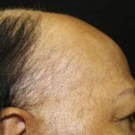
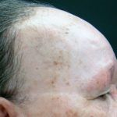
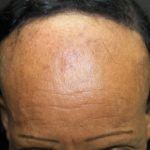
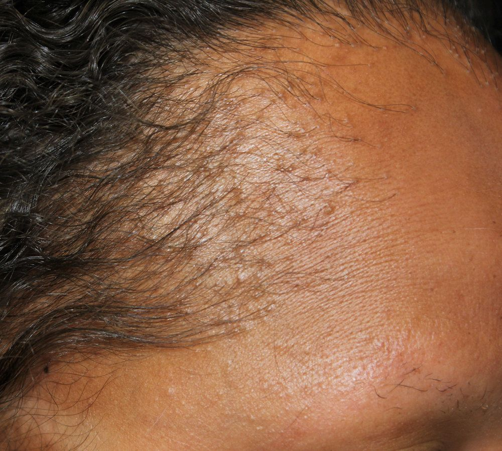
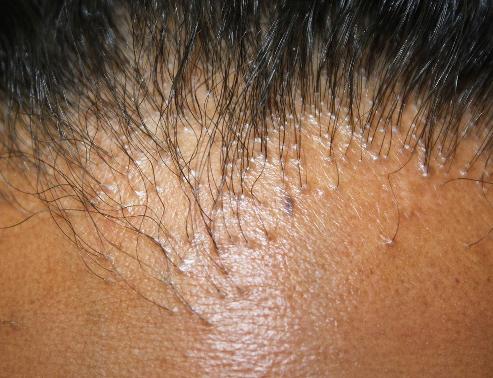
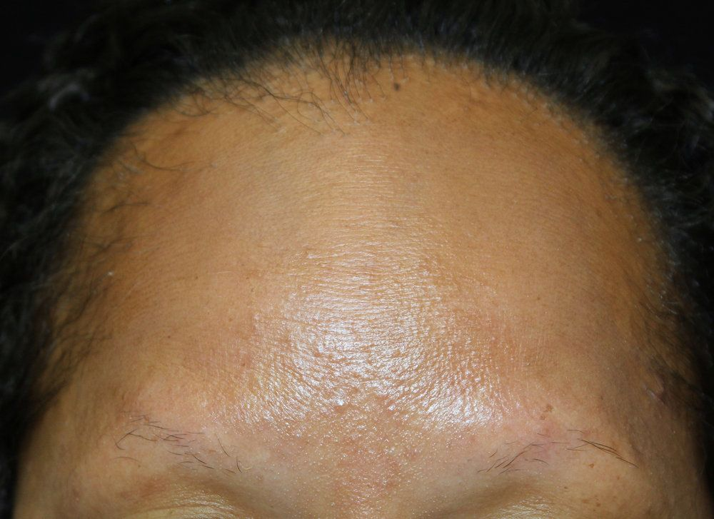
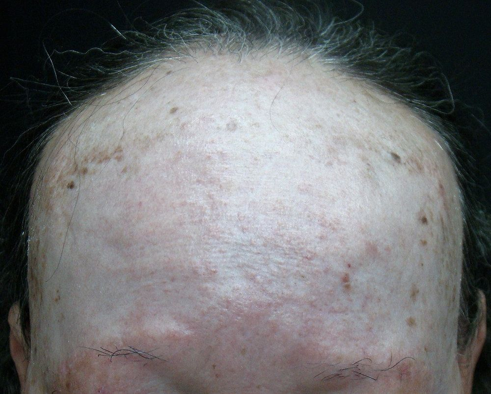
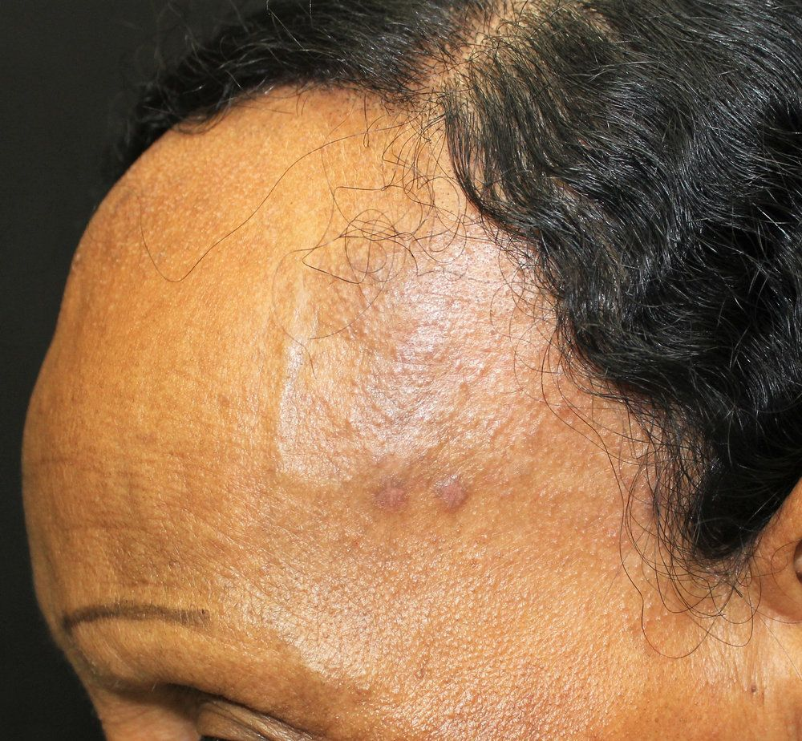
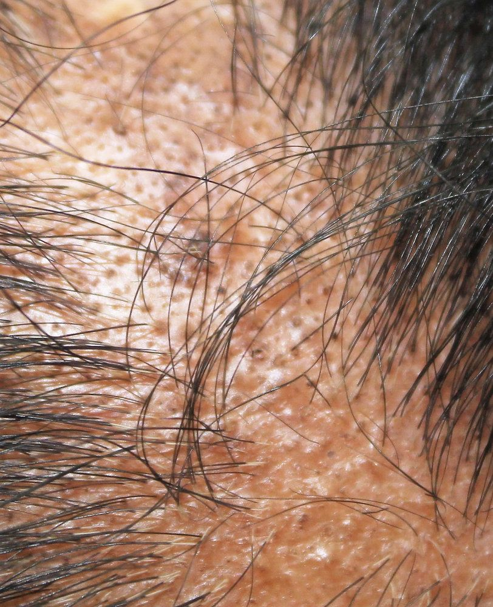

A alopecia fibrosante frontal (AFF) é uma forma de alopecia lentamente progressiva e cicatrizante que apresenta recesso simétrico das margens frontal e temporal de implantação dos cabelos.
Epidemiologia
Geralmente acomete mulheres na pós-menopausa com cerca de 60 anos. Alguns casos já foram relatados em mulheres pré-menopáusicas, sendo as mais jovens com 21 anos, e raramente acomete os homens.
Etiologia
A etiologia permanece desconhecida. Mas seu início em pacientes com menopausa precoce corrobora a ideia de que mudanças hormonais podem ter um papel na etiologia. Acredita-se que os folículos pilosos do escalpo fronto-temporal, em resposta às mudanças ocorridas na menopausa, possam ser programados para a morte celular ou comecem a expressar neoantígenos que estimulem uma resposta autoimune linfócito-T mediada, levando à destruição folicular.
Manifestações clínicas
A alopecia fibrosante frontal caracteriza-se pelo desenvolvimento de perda de cabelo fronto-temporal, que geralmente apresenta diâmetro entre 1 e 8 cm. Muitas vezes, um pequeno número de cabelos isolados é poupado dentro da área de alopecia, achado referido como “sinal de cabelo solitário”. O recesso frontal pode progredir até a metade do escalpo ou mais, porém, a progressão da lesão é variável. Na maioria dos casos, a doença é autolimitada, mas, o grau de progressão, antes da estabilização, é imprevisível.
A pele acometida pela alopecia apresenta-se pálida e atrófica, sendo evidente o contraste entre a hipopigmentação da área afetada, e a hiperpigmentação da pele imediatamente anterior. A perda bilateral dos pelos das sobrancelhas é um achado comum, que ocorre em 50 a 83% dos pacientes, e pode acontecer antes ou depois da queda capilar. Na linha dos cabelos, é possível observar hiperceratose e coloração eritêmato-violácea em alguns orifícios foliculares. O prurido ou tricodinia podem estar presentes nesses pacientes.
Diagnóstico
O diagnóstico é confirmado pela histologia do couro cabeludo afetado, onde se observa alopecia cicatricial com infiltrado monomorfonuclear liquenóide em infundíbulo e istmo do folículo, redução do número de folículos capilares, fibrose perifolicular, dermatite da interface folicular. Os níveis séricos de andrógenos, hormônios tireoidianos e índices hematológicos são normais. Anti-DNA e FAN podem ser positivos em baixos títulos. Achados dermatoscópicos comuns na alopecia fibrosante frontal incluem hiperqueratose folicular e eritema perifolicular.
Diagnóstico diferencial
Os diagnósticos a serem afastados incluem: alopecia areata, lúpus eritematoso cutâneo e sistêmico, alopecia por tração, alopecia androgenética, pseudopelada de Brocq. A dermatoscopia é uma ferramenta diagnóstica especialmente útil para distinguir a alopecia frontal fibrosante da alopecia areata.
Tratamento
Devido ao caráter irreversível, o objetivo do tratamento é evitar a progressão da doença. Os tratamentos que têm sido usados incluem corticosteroides tópicos, intralesionais e sistêmicos; retinoides tópicos; isotretinoína oral; minoxidil tópico; hidroxicloroquina e finasterida. Os corticoides constituem a terapêutica de primeira linha, especialmente em estágios inflamatórios precoces, mas recaídas ocorrem quando se interrompe o tratamento.
Corticóides sistêmicos (25-50mg/dia por 30 dias) e finasterida (2,5mg/dia por 12 a 18 meses) diminuíram a velocidade de progressão em alguns casos. Fosfato de cloroquina (150mg/dia) também controlou a evolução de alguns pacientes. A hidroxicloroquina é um agente não imunossupressor com propriedades imunomoduladoras, sendo usada na dose de 6,5 mg / kg por dia durante 6 a 12 meses, como tratamento inicial. Normalmente é prescrito para adultos em uma dose de 200 mg duas vezes ao dia. Pelo menos dois a três meses de tratamento são freqüentemente necessários para obter sinais iniciais de resposta. A AFF é frequentemente associada à alopecia androgênica. Diante disso, o uso dos inibidores da 5-alfa-redutase, finasterida e dutasterida, juntos com minoxidil podem melhorar a alopecia androgênica, falseando a melhora da AFF. O minoxidil via oral em baixas doses que variam de 0,5 a 2mg tem se mostrado de grande valia na alopecia fibrosante frontal.
REFERÊNCIAS BIBLIOGRÁFICAS
1. Update on Frontal Fibrosing Alopecia. Esteban-Lucía L. Actas Dermosifiliogr. 2017 May;108(4):293-304.
2. Low-dose oral minoxidil for frontal fibrosing alopecia: a 122-patient case series. Pindado-Ortega C. Actas Dermosifiliogr. 2024 Nov 12:S0001-7310(24)00886-X.
3. Frontal Fibrosing Alopecia in Men: Presentations in 12 Cases and a Review of the Literature. Ormaechea-Pérez N. Actas Dermosifiliogr. 2016 Dec;107(10):836-844.
4. Frontal Fibrosing Alopecia: A Retrospective Study of 75 Patients. Maldonado Cid P. Actas Dermosifiliogr (Engl Ed). 2020 Jul-Aug;111(6):487-495.
5. Frontal Fibrosing Alopecia: An Update on Epidemiology and Treatment. Martínez-Pérez M, Churruca-Grijelmo M. Actas Dermosifiliogr. 2015 Nov;106(9):757-8.
Atlas de imagens 10



















Na Skin Prime
Como podemos ajudar
Entre os recursos citados para Alopecia Fibrosante Frontal, estes estão disponíveis na clínica:
Tratamentos
Diagnóstico